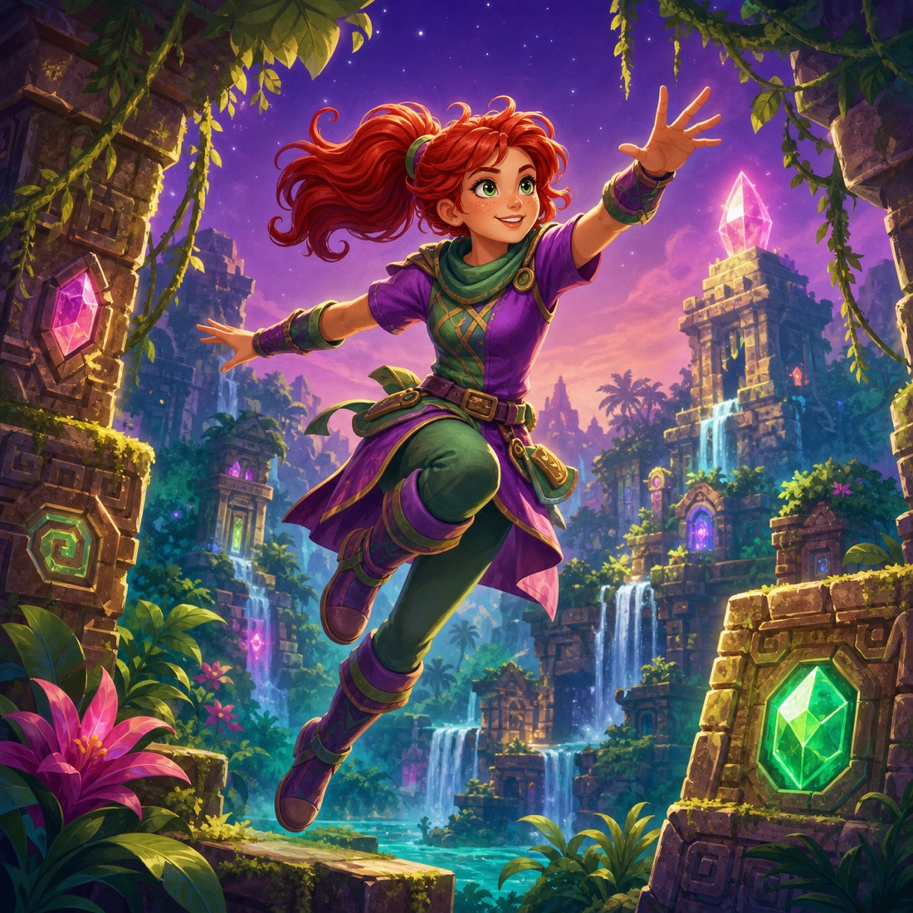

Made for kids
Big choices, friendly language, mouse and controller navigation, and a playful Abby-centric default theme.
A magical little game library
A controller-first arcade that makes classic games approachable for kids—wrapped in a safe, joyful interface designed for Abby.

Big choices, friendly language, mouse and controller navigation, and a playful Abby-centric default theme.
Games enter through a grown-up import flow with test launches, constrained settings, and library health checks.
Developed on macOS, designed for Linux deployment, and built around replaceable emulator adapters.
Four worlds, one library
Each emulator stays behind the same simple game card and return-to-arcade experience.
Classic PC adventures with per-game speed and display settings.
ADF floppy support with parent-supplied Kickstart firmware.
Cartridge images, isolated saves, and controller-first play.
ISO, GCM, and RVZ support through supervised native launching.
Simple on the outside, careful underneath
Game metadata never becomes a shell command. Every import is validated, staged, and approved before it appears in the child’s library.
Where the path leads
The long-term goal is not only playing games—it’s helping Abby imagine and create her own.
Whimsical launcher, managed library, safe imports, and supervised emulator exits.
Persistent profiles, per-game mappings, appliance mode, and kid-friendly recovery.
Packaged macOS and Linux installers with first-run checks and backup tools.
Speech-assisted ideas transformed into small, editable games Abby can call her own.